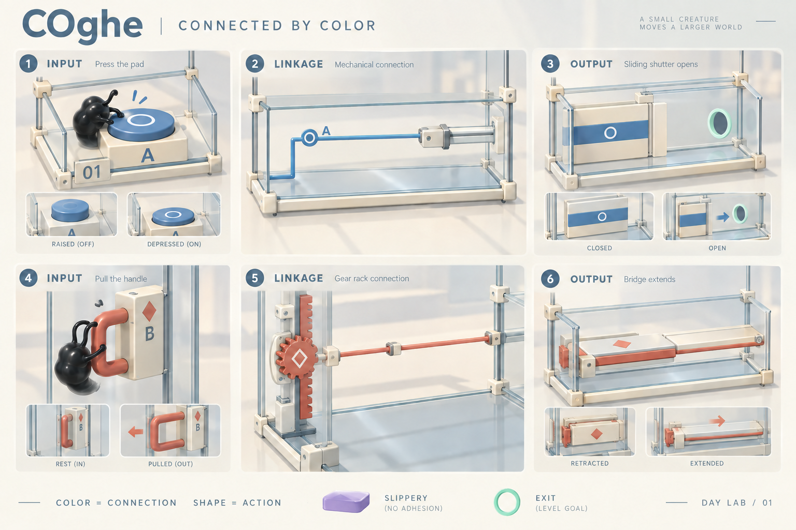
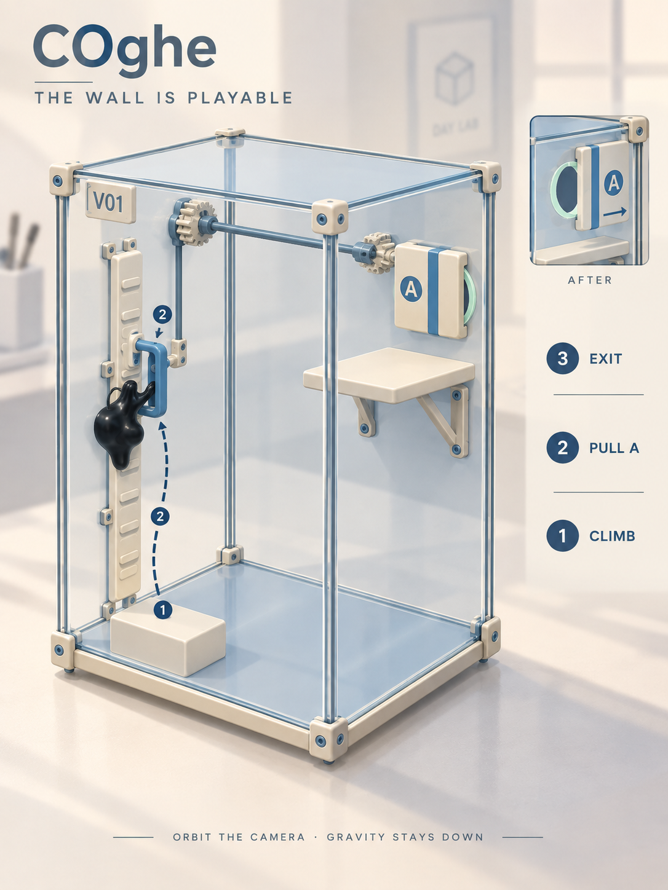
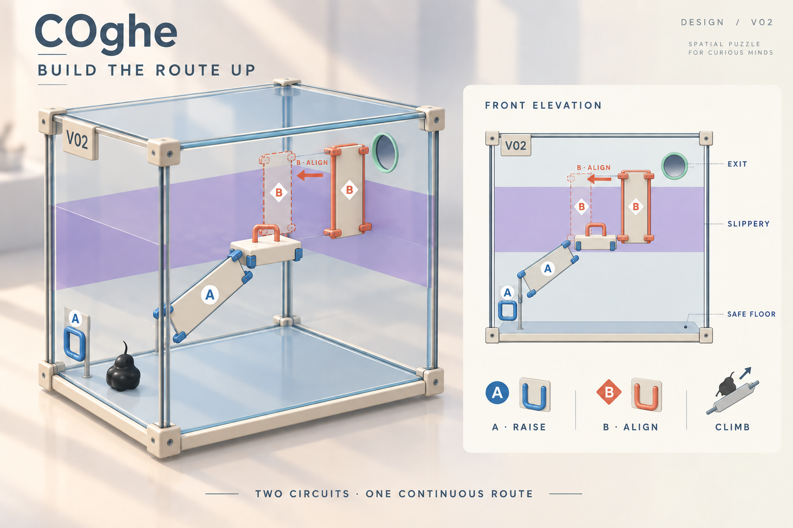

01 · Màu chỉ liên kết, hình chỉ thao tác
Nút xanh mở cửa xanh. Tay kéo coral tác động vào cầu coral. Màu nhận diện giữ nguyên khi hoạt động; độ lún, hành trình, chốt và đèn nhỏ cho biết trạng thái thật.


Nút chịu trọng lượng phải có mô thực trên mặt cap. Trên vách dùng tay kéo/cần gạt; muốn nút ấn chủ động phải có cơ chế riêng. Không mang nút sàn xoay 90° rồi giả định vẫn chạy.
02 · V01 — Trạm trên vách
Một bài ngắn: sinh vật leo tới tay kéo A trên vách, kéo để mở cửa A ở phía đối diện, rồi bò tới lỗ. Chỉ một quan hệ mới để người chơi nhận ra cả chiều cao của hộp đều có thể sử dụng.


03 · V02 — Ghép đường lên cao
Vành trơn bao quanh hộp ngăn bò thẳng lên. A đưa tấm bám tới một bệ giữa; từ bệ đó người chơi điều chỉnh B để nối tới vùng kính trên. Không cần căn rơi: ghép sai thì dịch lại, rơi xuống vẫn leo lại được.


Mặt đứng logic · trước khi ghép B
Vì sao đây là puzzle 3D?
- A phải nối từ vùng bám dưới tới đảo giữa dải trơn.
- Sinh vật phải thực sự leo tới bệ mới thao tác được tay B.
- B dịch ngang: chân tấm nối bệ, đầu tấm vượt lên vùng bám trên.
- Ghép xong tạo đường liên tục tới lỗ; không thêm cờ “đã dùng đủ cơ quan” để ép lời giải.
Phải kiểm tra đường vòng: kính thường, mép, gá, ray và trần đều có thể tạo lối tắt. Không khóa leo bằng luật ẩn để bắt đi theo tranh.
Hồ sơ V02 đầy đủ ↗Thư viện rộng hơn · xen kẽ sàn và chiều cao
Làm rõ theo ý người dùng: hai hình V01/V02 chỉ là ví dụ. Hướng phát triển bao gồm ròng rọc, thang nâng, các hộp xếp chồng, cầu và nhiều cơ cấu khác. Không biến mọi màn thành một tháp bánh răng–cửa.
Ròng rọc & đối trọng
Kéo dây → bệ nâng. Sau khi hiểu mới thêm tải, phanh hoặc đổi đường truyền. Dây và đầu ra cùng mã màu, chuyển động cho thấy nguyên nhân–kết quả.
Thang nâng
COghe bước lên khay rồi được chở tới bệ. Học điểm dừng an toàn trước, sau đó mới mang khối và chọn cao độ; luôn có cách gọi khay trở lại.
Khối xếp thành đường
Bắt đầu bằng hộp xếp lệch cố định để leo. Tiếp theo đẩy khối lấp khoảng trống; xếp khối lên cao cần dốc hoặc thiết bị nâng, không tự cho sinh vật khả năng nhấc vật.
Xen kẽ, không tăng cao liên tục
Màn sàn học nguyên lý → màn cao luyện lại → màn sàn nghỉ nhịp → màn kết hợp. Cơ quan xuất hiện dần; Boss phối hợp điều đã học, không bất ngờ thêm luật mới.
Khó ở suy luận và phối hợp. Một màn cao có thể rất dễ, một màn trên sàn vẫn có thể khó. Không dùng chiều cao hoặc số object để đại diện cho độ khó.
Xem thư viện cơ quan và ví dụ nhịp một chương trong kế hoạch ↗
04 · Dựng ít nhưng kiểm tra đúng
Có nền tảng để tái dùng
Rail có trục local, tay kéo có mặt đỡ và điểm chân, lực hữu hạn theo cơ thể; camera V2 đã có orbit và pinch. Cần kiểm chứng cấu hình đứng bằng thao tác thật.
Phần cần mở rộng cẩn thận
Nút nhấn chủ động trên vách; tiếp xúc khi đi cùng bệ động; cập nhật đường đi khi nhiều mặt đổi vị trí. Không lấy animation hoặc tranh làm bằng chứng vật lý.
Giữ được cảm giác chill
Khó ở chọn trạng thái và nhìn ra liên kết. Tay nắm lớn, chốt ổn định, không cần timing; sai thì sửa tại chỗ. Không xếp nhiều sàn kín khiến người chơi phải tìm vật bị che.
Đo trên OPPO trước khi nhân rộng
Giữ vật lý hiện có; gộp trang trí, dùng ít vật liệu và một đèn đổ bóng. Đo frame time, graph, GC và GPU lúc cơ quan chạy, orbit và chơi lâu. Chưa có số đo mới.
Đề xuất thứ tự: thử nhận diện màu trên cơ quan hiện có → V01 một cụm trên vách → V02 ghép đường → mới phát triển nâng hạ, cầu đổi hướng và phối hợp hai vách.